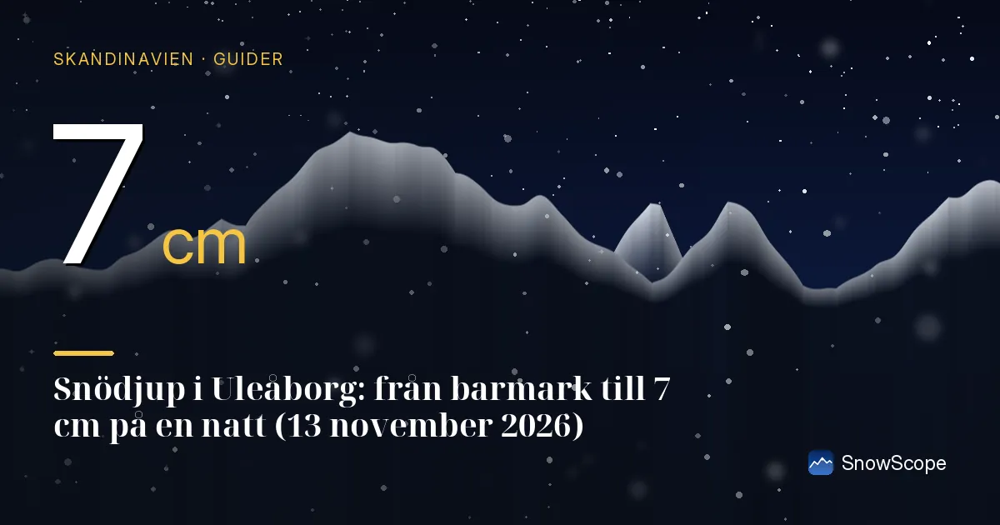

Snödjup i Uleåborg: från barmark till 7 cm på en natt (13 november 2026)
Uleåborg gick och lade sig brunt och vaknade vitt. Väderstationen i Kaukovainio, 3 km från centrum, hade barmark på torsdagsmorgonen och 7 cm snö på fredagen. Det är stadens första riktiga täcke i vinter, och det kom lite senare än vanligt.
Se snöprognosen för Oulu live i SnowScope-appenSnödjup, pudervarningar och 3D-kartan, gratis.
Runt staden
Snön kom längs hela Bottenvikskusten på en gång. Karlö, ute på ön, mätte 5 cm, Ruukki i Siikajoki 8 cm, Vaala Pelso inåt land 4 cm och Pudasjärvi flygplats 2 cm. Varenda en av dem hade barmark dagen innan.

Sent, sedan ungefär normalt
Vår snöhistorik för Uleåborg omfattar 46 vintrar. Snö på marken den 13 november är regel, 33 vintrar av 46, men oftast tunt: mittvärdet är 2 cm och en vinter av fyra hade 5 cm eller mer. Hälften av vintrarna hade sitt första bestående täcke den 28 oktober, så årets start är ett par veckor sen, medan dagens djup faktiskt är över det vanliga för datumet.
De senaste vintrarna det här datumet: 1 cm, barmark, 5 cm, barmark och 1 cm. Den 1 december har Uleåborg normalt runt 9 cm, i mitten av december 14 cm och i mitten av januari runt 27 cm.
Helgen
Först lite mer snö: runt 2 cm på fredagen och 1 cm på lördagen, med temperaturer strax under noll. Söndagen är mest torr och något mildare, upp mot 3 °C. På måndag blir det regn, från ett par millimeter till runt 8 mm beroende på prognos, vid 1 till 4 °C. Det nya täcket krymper och klarar kanske inte början av nästa vecka.
Tips för skidåkare
- Lördag är bästa dagen att njuta av det: vitt, strax under noll och inget regn än.
- Nysnö på gångvägarna längs älven döljer de första isfläckarna: se upp på broarna.
- Tunn snö plus måndagens regn blir slask: vattentäta skor till jobbet.
Fler kartor (externa webbplatser)
Referenser och källor
- Finnish Meteorological Institute, open data (daily snow depth) en.ilmatieteenlaitos.fi/open-data
- Open-Meteo, weather forecast data (ECMWF and ICON models) open-meteo.com/
Om siffrorna
Snödjup i dag: uppmätt vid väderstationer på morgonen den 13 november 2026 (Meteorologiska institutet i Finland). En station mäter snön på sin egen lilla yta, så några kilometer bort och hundra meter högre kan marken se annorlunda ut. Platser och regler: de officiella sidorna nedan.
Citera den här rapporten
För forskning, undervisning eller press: siffrorna och diagrammen får återanvändas fritt under CC BY 4.0 med den här källhänvisningen.
SnowScope (2026), Snödjup i Uleåborg: från barmark till 7 cm på en natt (13 november 2026), https://snowscope.app/blog/sv/2026/11/oulu-snow-depth-13-november-2026.html, hämtad 2026-11-13
SnowScope (Atlas Labs). (2026, November 13). Snödjup i Uleåborg: från barmark till 7 cm på en natt (13 november 2026). SnowScope snow reports. https://snowscope.app/blog/sv/2026/11/oulu-snow-depth-13-november-2026.html
BibTeX
@misc{snowscope2026oulusnowdepth13november2,
author = {{SnowScope (Atlas Labs)}},
title = {Snödjup i Uleåborg: från barmark till 7 cm på en natt (13 november 2026)},
year = {2026},
month = nov,
howpublished = {\url{https://snowscope.app/blog/sv/2026/11/oulu-snow-depth-13-november-2026.html}},
note = {Published 2026-11-14 13:29 UTC; accessed 2026-11-13}
}· CC BY 4.0 · Metoder, data och verktyg →
Följ Oulu
Gratis: ett meddelande när nysnö är på väg, och prognosen varje morgon.